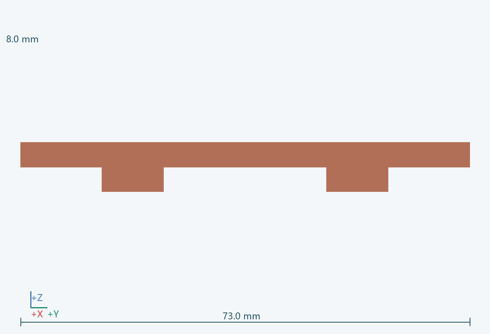
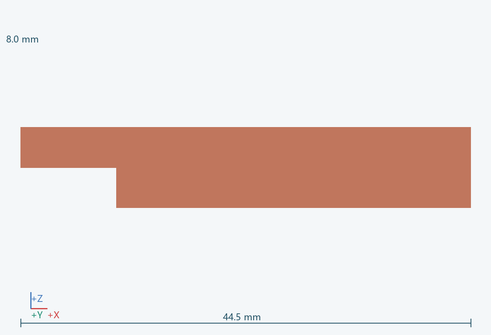
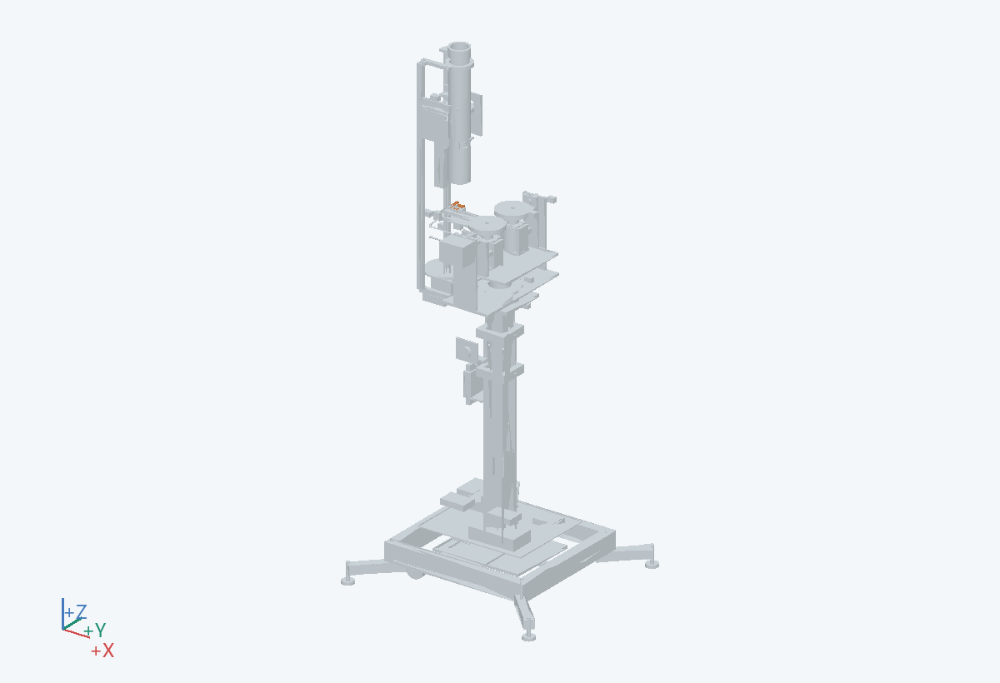

44.5 × 73.0 × 8.0 mm（含所示实例）
定位低位球头，在离开轮组前按顺序释放。
连接 0701，由 0704 开合；闭合用于脱筒与转向，喂入时按试验时序释放。
柔顺夹片或带软垫夹指
从托架两侧更换软垫和夹片。
不能默认到 X=-5 才松夹；不得让飞轮拉扯尚被夹紧的球。 关联：U01/U05
PRT-0702__L, PRT-0702-A__L, PRT-0702__R, PRT-0702-A__R